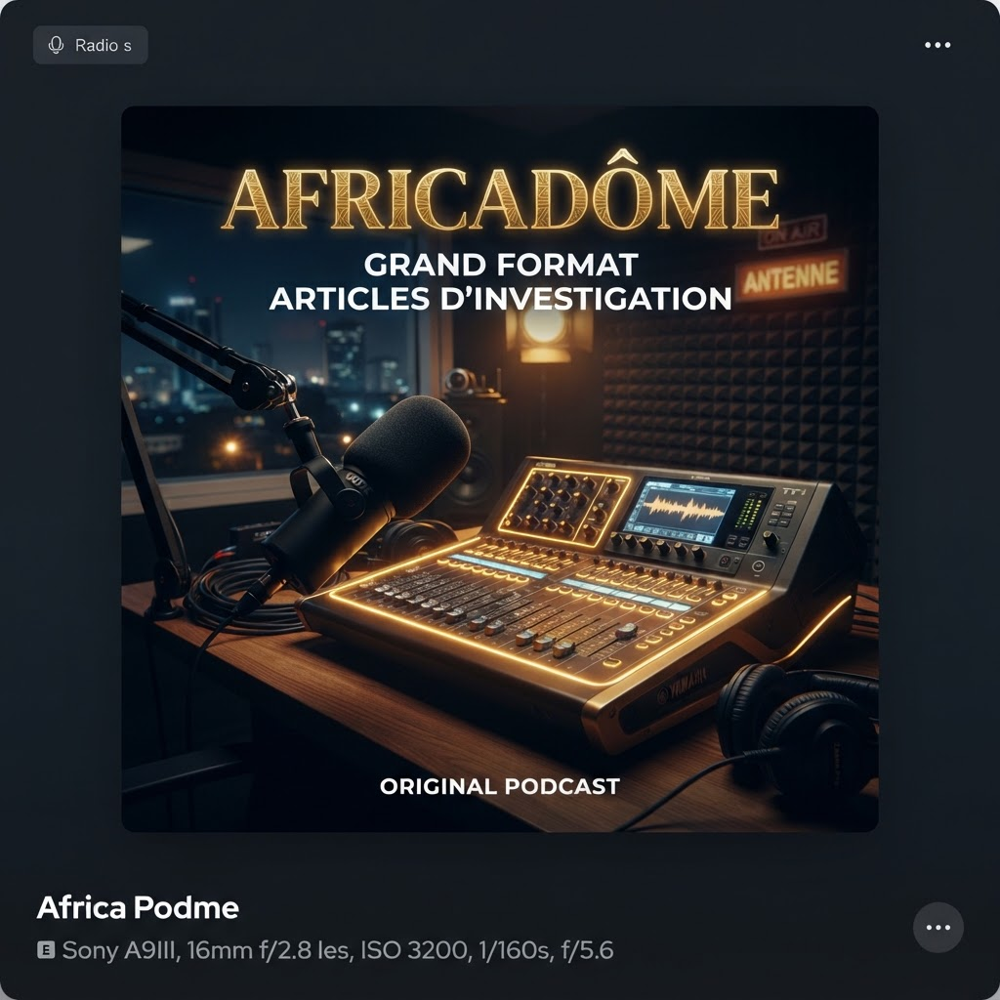
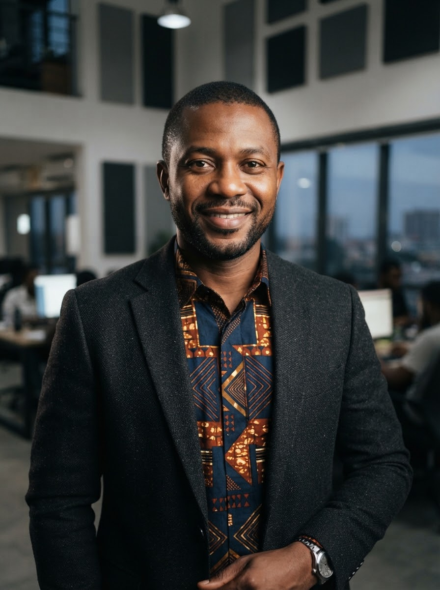

Longtemps réduites au rang de secteur informel ou folklorique, les industries créatives africaines s'affirment comme un accélérateur de croissance, d'emplois qualifiés et de « soft power » pour le continent. En combinant l'essor des réseaux à haut débit, les micropaiements mobiles et une audace stylistique sans précédent, une constellation de studios indépendants redessine l'économie mondiale du divertissement.
1. Le basculement numérique : l'indépendance narrative financée par le mobile
À Yaba, le district technologique de Lagos, l'effervescence ne faiblit jamais. Dans un loft vitré où ronronnent des serveurs de rendu, une trentaine de créateurs âgés de 20 à 28 ans finalisent la post-production d'une série d'animation 4K doublée en yoruba, swahili et français. Il y a encore quelques années, un tel projet dépendait presque exclusivement de subventions internationales ou de chaînes étrangères souvent déconnectées des réalités locales.
Aujourd'hui, le modèle économique a muté. Avec la généralisation de l'Internet mobile et des portefeuilles numériques (mobile money), les studios monétisent directement leurs contenus auprès des diasporas et des jeunesses urbaines.
Nous ne demandons plus la permission de raconter nos histoires. Nous créons nos propres chaînes de valeur, et le monde vient désormais acheter nos licences à nos conditions.
2. Chiffres repères : la cartographie d'une explosion sectorielle
Les indicateurs compilés par Africadôme montrent une croissance à deux chiffres dans quatre segments clés : l'animation & les VFX, la musique enregistrée & les concerts, le jeu vidéo mobile et la mode digitale.
Baromètre de l'économie créative panafricaine 2026
Revenus du streaming musical et de la VOD locale
Levées de fonds des startups créatives
D'emplois directs et indirects visés d'ici 2030
location_cityTop 5 des métropoles de production créative (indice de rayonnement)
3. L'intelligence artificielle générative : menace ou super-pouvoir d'émancipation ?
Loin de subir la vague des modèles occidentaux, des ingénieurs et créateurs africains constituent des jeux de données ancrés dans la tradition orale, les langues locales et les cosmogonies du continent. Le grand défi reste celui du droit d'auteur et de la juste rémunération des artistes dont les œuvres nourrissent ces modèles.

« IA & héritage narratif : les nouveaux conteurs du cyberespace »
Invités : un fondateur de startup d'IA linguistique (Accra) et une conceptrice de jeux vidéo (Dakar).
4. Vers une ère de souveraineté culturelle et financière
La conquête des marchés mondiaux n'est plus un objectif d'assimilation mais un acte de rayonnement choisi. En structurant des incubateurs spécialisés, en développant des cadres juridiques régionaux protecteurs pour la propriété intellectuelle et en favorisant les coproductions sud-sud, l'Afrique démontre la profondeur de son réservoir de talents.
Le rendez-vous de la décennie ne se jouera pas seulement dans la capacité à exporter des rythmes ou des motifs, mais dans la maîtrise des plateformes et des infrastructures qui acheminent la mémoire et les futurs du continent vers le reste du monde.

Analyse remarquable. Sur le terrain en Afrique de l'Ouest, la vraie révolution réside dans le regroupement de studios indépendants en consortiums : les décors à Cotonou, l'animation des personnages à Dakar et l'étalonnage à Lagos. Cette collaboration décuple notre force de frappe financière.